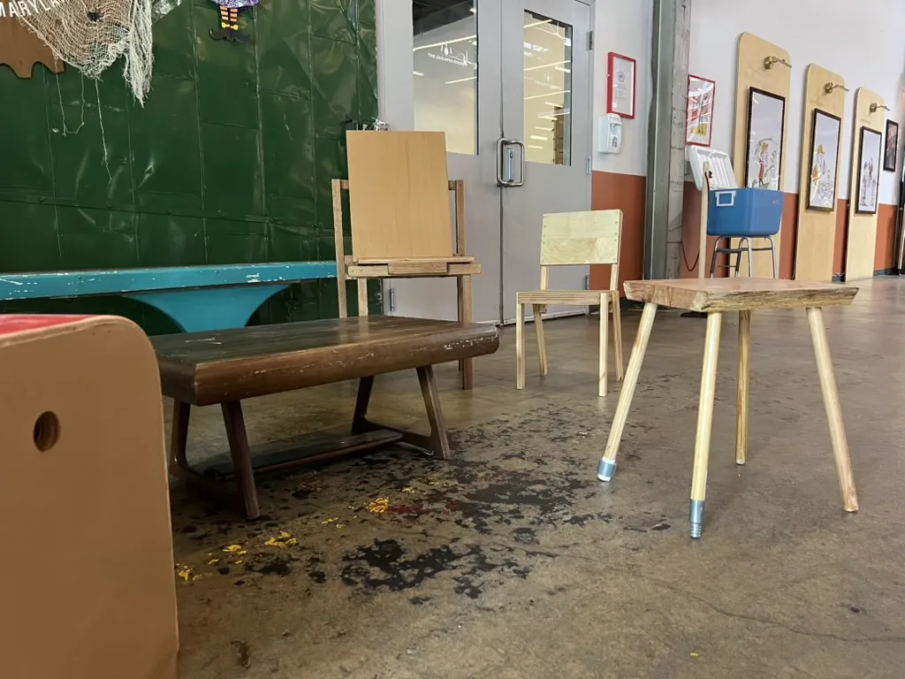
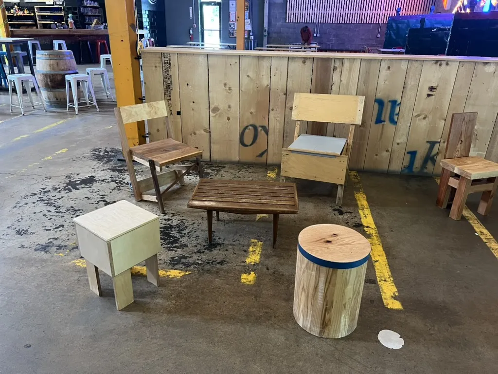
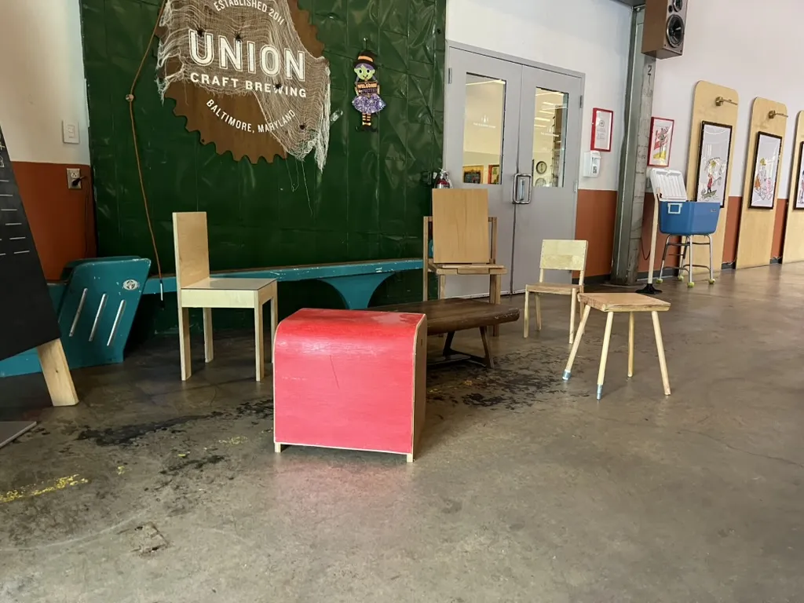
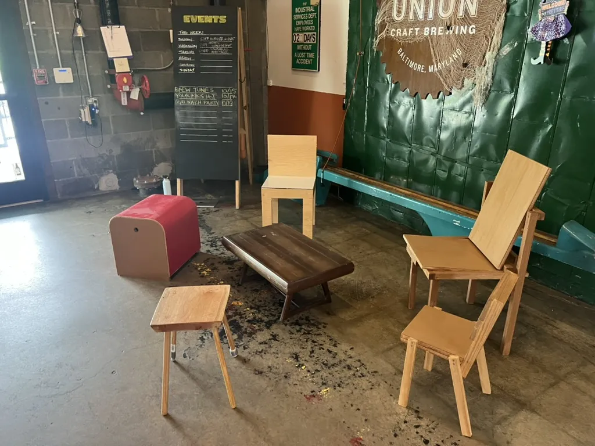
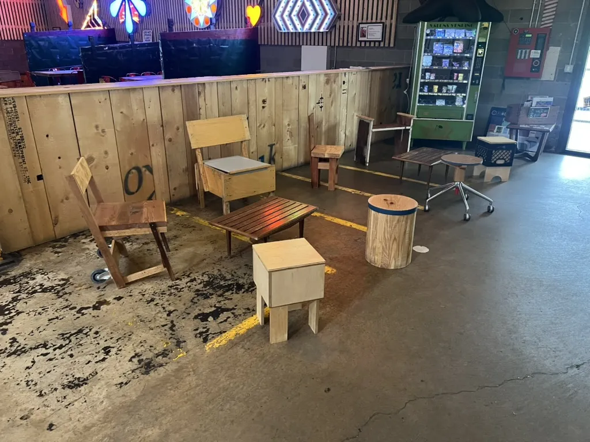
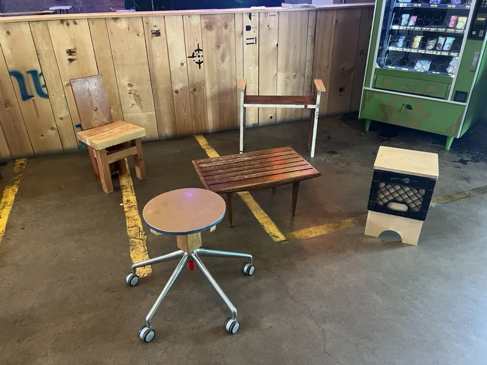

Christopher Attenborough and I have built 16 chairs so far, one per work session, from whatever’s left in the shop. Thirteen are on view at Union Craft Brewing in Baltimore.
We started in May 2026, mostly to use up the old material piling up in Chris’s shop, which sits in the same warehouse complex as Union. It was also a joke. A Yelp review had complained that the Union taproom didn’t have enough places to sit.
There are three rules. A chair has to work, it has to be safe, and it has to be finished in one session.
Under the rules sits the real question. What makes a chair? How do you know when you’ve made one? What’s a chair for? How little can you use and still have one? Is a stool a chair? Is a bench a chair? Is stool-ness a subset of chair-ness? Craftspeople have chased the perfect chair for centuries, in bent wood, plastic, metal tubing, textiles and stone. We chase it with whatever turns up: shop scraps and roadside finds.
So far, the least material went into a stool I made, held together with traditional joinery. Overall, though, Chris’s chairs run leaner than mine.
Two didn’t even make it to the floor, because we decided they weren’t safe. The rest went out to the taproom, and two weeks later one was already back in the shop for repairs.
Beside the chairs runs a loop of chair history: museum pieces, quotes and whatever else the research turned up, drawn from the chair-ness channel on Are.na.
The shop isn’t empty yet.





